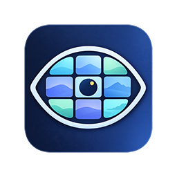
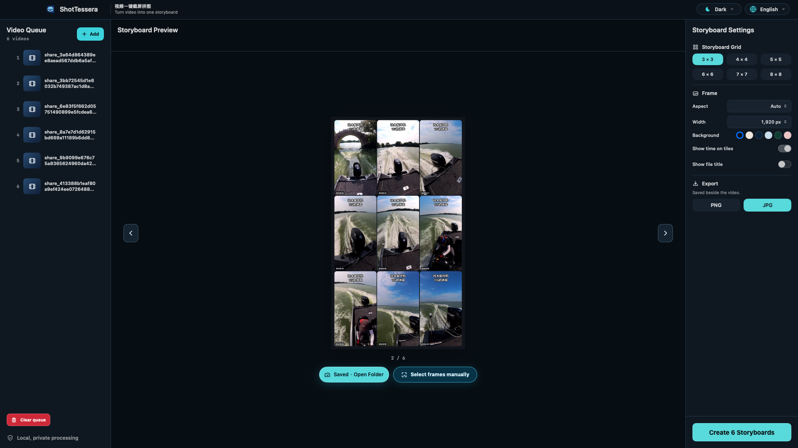
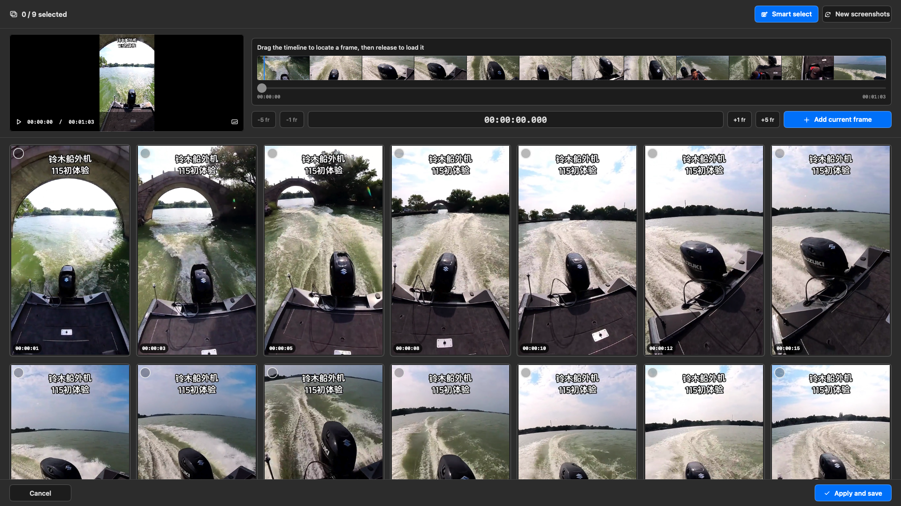
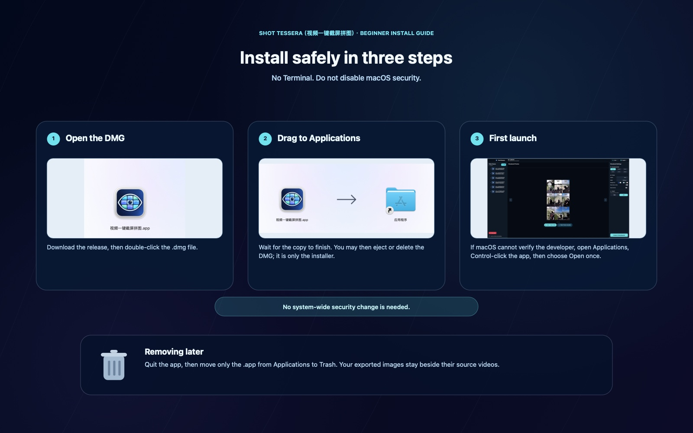

Smarter frame selection
Balances sharpness, scene variety, faces, action, and text-heavy screens for more useful results.

ShotTesseraNative macOS · Private by default
Pick representative frames, make precise adjustments, and export a polished contact sheet—entirely on your Mac.
macOS 13+ · Apple Silicon & Intel · Free and open source

A focused workflow
Add one clip or a batch. The queue stays simple and visible.
Use intelligent selection, then fine-tune with a real player timeline when you need control.
Set grid, dimensions, background, labels, and PNG or JPG—then save beside your video.

Designed for the edit, not the setup
Every part of ShotTessera is tuned for the moment you need to review a film, share a scene, or find a shot again.
Balances sharpness, scene variety, faces, action, and text-heavy screens for more useful results.
Scrub a visual timeline, step by frames, type a timecode, and number your selected sequence.
From 3 × 3 to 8 × 8, landscape to vertical, with backgrounds that match the material.
Your footage stays yours
Frame analysis and export happen on your Mac. ShotTessera has no telemetry, cloud processing, Electron, FFmpeg, or Python runtime.
Getting started

Ready when you are